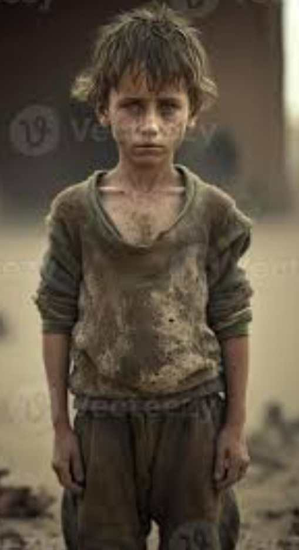

In the heart-wrenching aftermath of conflict in GAZA, emerges the story of NOUR, a child whose journey transcends the battlefield and paints a portrait of resilience against all odds.
Nour's parents, HAYAT and JAMAL, once vibrant members of their community, found themselves ensnared in the web of war. HAYAT, a dedicated teacher, and Jamal, a hopeful entrepreneur, instilled in Nour the power of knowledge and the unwavering spirit to rise above adversity.The brutalities of war robbed Nour of the warmth of family, as Fatima and Jamal became casualties in a conflict that spared no one. Left to navigate a world fractured by violence, Nour's odyssey unfolded against the backdrop of shattered homes and fractured dreams.
Yet, in the midst of destruction, Nour discovered a resilient community of fellow survivors. Together, they carved a sanctuary from the remnants of their past, where shared stories and the collective yearning for a better future became their guiding light.
Nour's determination to reclaim a sense of normalcy led to the establishment of makeshift classrooms, where education became a beacon of hope. With donated books and a shared hunger for knowledge, Nour and fellow young minds embarked on a collective journey to rebuild not only their lives but also their dreams.
As the world contemplates the echoes of tomorrow, Nour's story serves as a poignant reminder that even in the wake of devastation, the human spirit can endure. It beckons us to recognize the indomitable resilience of children who, against the backdrop of conflict, aspire to rebuild a world where the echoes of hope drown out the echoes of war.